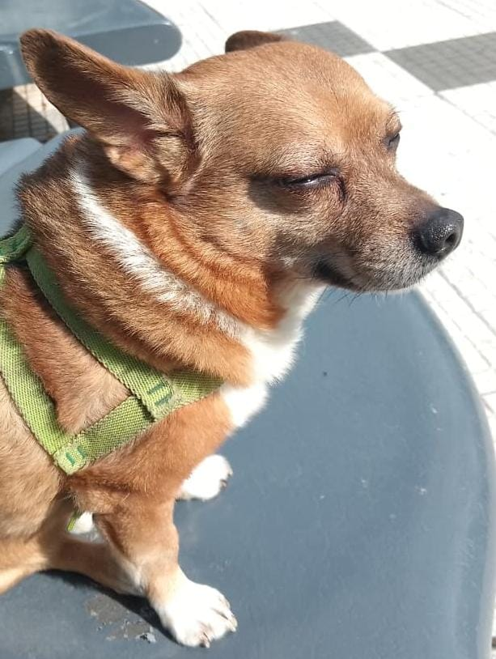

#02
Celi
Celina
- Ciudad
- Caballito, CABA
- Edad
- 30 años
Me especializo en resolver problemas que yo misma creé hace dos semanas, en discutir con bases de datos que no me responden, y en decir "en mi máquina funciona" con total seguridad mientras rezo por dentro. Mi misión: que todo funcione, que nadie lo note, y que cuando se caiga, no sea culpa mía (aunque probablemente lo sea).
Skills
- PHP
- Laravel
- SQL
- AWS
Películas favoritas
- El Origen (2010)
- Batman: el caballero de la noche (2008)
- El planeta del tesoro (2002)
Discos favoritos
- Thriller — Michael Jackson
- Britney — Briteny Spears
- Monkey Business — Black Eyed Peas